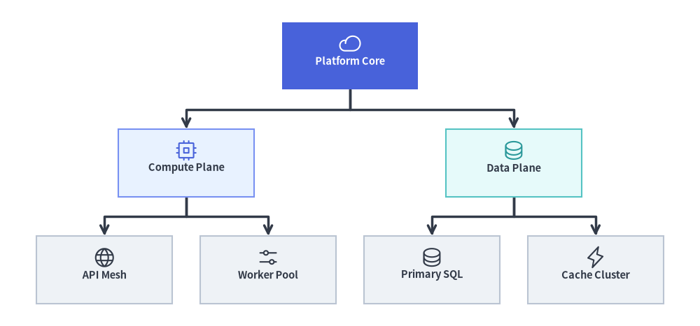
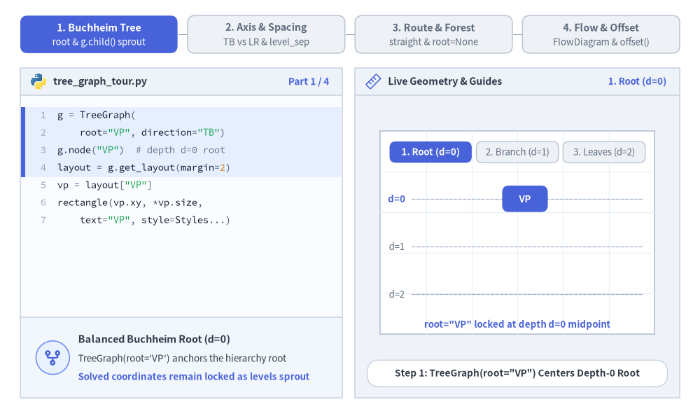
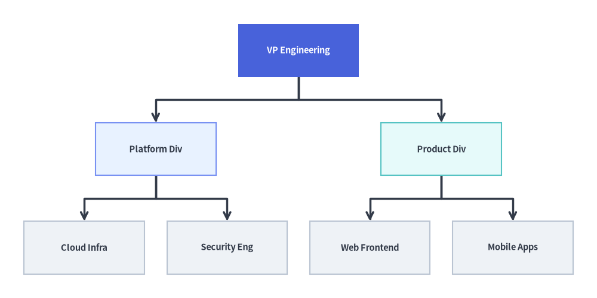
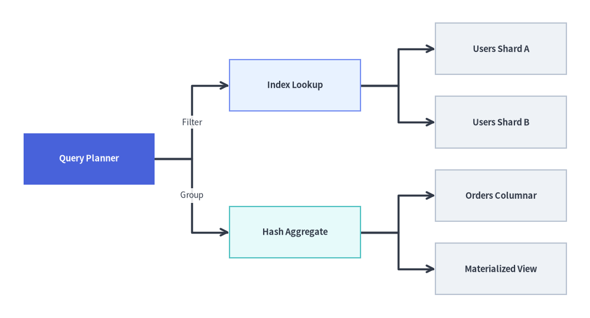
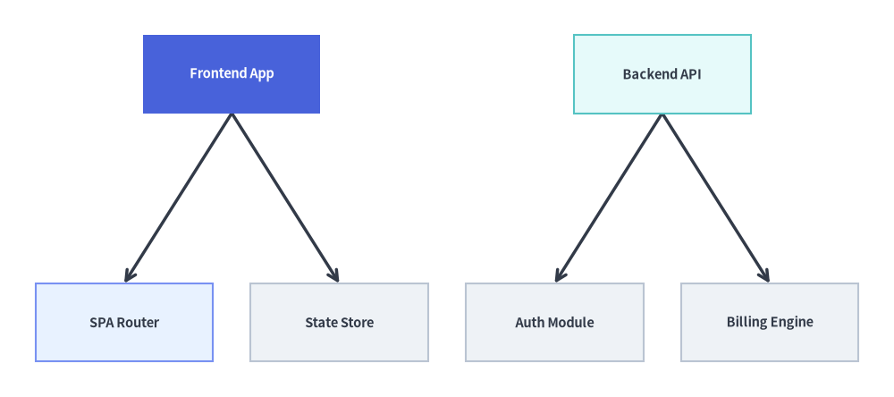

TreeGraph: Balanced Hierarchies & Decomposition Trees
TreeGraph implements the Reingold-Tilford / Buchheim compact tree layout algorithm, computing balanced (cx, cy) node centers and branch waypoints so that every parent node is symmetrically centered over (or beside) its children while sibling subtrees are packed tightly without ever colliding.
Use TreeGraph whenever your topology is a strict tree (every node has at most one parent), such as organization charts, Abstract Syntax Trees (ASTs), call hierarchies, taxonomy breakdowns, or fault trees. Call layout = g.get_layout(margin=...) to solve coordinates and render with FlowDiagram, ArchitectureDiagram, or drawlib.shapes and drawlib.lines.

Source Code
from drawlib.canvas import save, setup
from drawlib.graph import TreeGraph
from drawlib.icons import phosphor
from drawlib.lines import lines
from drawlib.shapes import rectangle
from drawlib.styles import Styles
setup(width=124, height=58)
g = TreeGraph(
root="core",
direction="TB",
level_sep=7.0,
sibling_sep=5.0,
edge_routing="orthogonal",
default_node_width=24.0,
default_node_height=12.0,
)
# Level 0: Root Node
g.node("core")
# Level 1: Division Branches
g.child("core", "compute")
g.child("core", "data")
# Level 2: Leaf Subsystems
g.child("compute", "api")
g.child("compute", "workers")
g.child("data", "sql")
g.child("data", "cache")
# 1. Compute balanced tree coordinates & orthogonal branch waypoints
layout = g.get_layout(margin=4.5)
# 2. Render orthogonal tree branches from layout.edges
for e in layout.edges:
lines(e.points, arrow_head="->", style=Styles.DarkBold)
# 3. Render node cards & Phosphor icons at solved (cx, cy) coordinates
node_meta = {
"core": ("\nPlatform Core", Styles.PrimaryFlat, Styles.WhiteBold, phosphor.cloud, Styles.White),
"compute": ("\nCompute Plane", Styles.PrimaryNeutral, Styles.DarkBold, phosphor.cpu, Styles.Primary),
"data": ("\nData Plane", Styles.SecondaryNeutral, Styles.DarkBold, phosphor.database, Styles.Secondary),
"api": ("\nAPI Mesh", Styles.Neutral, Styles.DarkBold, phosphor.globe, Styles.Dark),
"workers": ("\nWorker Pool", Styles.Neutral, Styles.DarkBold, phosphor.sliders_horizontal, Styles.Dark),
"sql": ("\nPrimary SQL", Styles.Neutral, Styles.DarkBold, phosphor.database, Styles.Dark),
"cache": ("\nCache Cluster", Styles.Neutral, Styles.DarkBold, phosphor.lightning, Styles.Dark),
}
for nid, (label, box_st, txt_st, icon_fn, ic_st) in node_meta.items():
n = layout[nid]
rectangle(
n.xy,
width=n.width,
height=n.height,
style=box_st,
text=label,
text_style=txt_st.patch(text_size=10.5),
)
icon_fn((n.x, n.y + 2.2), width=4.0, style=ic_st)
save()
1. Core Concepts & Basic Usage
TreeGraph computes balanced Reingold-Tilford / Buchheim tree coordinates via layout = g.get_layout(): declare a hierarchy concisely with g.child(parent, child_id), tune direction ("TB" or "LR"), level_sep, and sibling_sep, switch edge_routing between "orthogonal" forks and "straight" diagonals (or pass root=None to arrange independent multi-root forests side-by-side), and render the solved layout[id].xy centers with primitives or FlowDiagram plus layout.offset():

Source Code
from __future__ import annotations
from drawlib.anim import Animation
from drawlib.canvas import save, setup
from drawlib.diagrams.flow import FlowDiagram, Process
from drawlib.graph import GraphLayout, TreeGraph
from drawlib.icons import code as code_icons
from drawlib.icons import phosphor
from drawlib.lines import line, lines
from drawlib.shapes import circle, rectangle
from drawlib.smartarts import SourceCode, SourceCodeStyles
from drawlib.styles import Styles
from drawlib.text import text
W, H = 138.0, 82.0
setup(width=W, height=H)
anim = Animation(fps=10.0, loop=0)
CODE_TEXT_SIZE = 10.0
PT_TO_CANVAS = W / 720.0
FONT_CANVAS = CODE_TEXT_SIZE * PT_TO_CANVAS
LINE_H = FONT_CANVAS * 1.8
PAD_Y = FONT_CANVAS * 1.2
CODE_STYLES = SourceCodeStyles.get("default", font_lang="en", text_size=CODE_TEXT_SIZE).patch(
box_style=Styles.Neutral.patch(shape_fill_color=(0, 0, 0, 0), shape_line_width=0),
)
PANE_HEADER = Styles.Neutral.patch(
shape_fill_color=(238, 243, 250),
shape_line_color=(203, 213, 225),
shape_line_width=1.2,
shape_r=0.0,
)
EDITOR_BODY = Styles.Neutral.patch(
shape_fill_color=(250, 252, 255),
shape_line_color=(203, 213, 225),
shape_line_width=1.2,
shape_r=0.0,
)
TAKEAWAY_BODY = Styles.Neutral.patch(
shape_fill_color=(242, 246, 253),
shape_line_color=(203, 213, 225),
shape_line_width=1.2,
shape_r=0.0,
)
STUDIO_BODY = Styles.Neutral.patch(
shape_fill_color=(239, 243, 249),
shape_line_color=(203, 213, 225),
shape_line_width=1.2,
shape_r=0.0,
)
PART_ITEMS = [
("1. Buchheim Tree", "root & g.child() sprout"),
("2. Axis & Spacing", "TB vs LR & level_sep"),
("3. Route & Forest", "straight & root=None"),
("4. Flow & Offset", "FlowDiagram & offset()"),
]
def draw_step_bar(active_part: int) -> None:
"""Draw top 4-part progress bar (active_part is 1..4)."""
pill_w = 31.0
pill_h = 7.4
gap = 2.0
start_x = 4.0 + pill_w / 2.0
cy = 75.2
for idx, (label, sublabel) in enumerate(PART_ITEMS, start=1):
cx = start_x + (idx - 1) * (pill_w + gap)
if idx > 1:
prev_cx = cx - (pill_w + gap)
line(
(prev_cx + pill_w / 2.0 + 0.2, cy),
(cx - pill_w / 2.0 - 0.2, cy),
style=Styles.PrimaryBold if idx <= active_part else Styles.MutedThin,
)
if idx == active_part:
st = Styles.PrimaryFlat.patch(shape_r=1.4)
tst = Styles.WhiteBold.patch(text_size=10.3)
sub_tst = Styles.White.patch(text_size=9.5)
elif idx < active_part:
st = Styles.PrimaryNeutral.patch(shape_r=1.4, shape_line_width=1.1)
tst = Styles.PrimaryBold.patch(text_size=10.3)
sub_tst = Styles.Primary.patch(text_size=9.5)
else:
st = Styles.Neutral.patch(shape_r=1.4, shape_line_width=1.1)
tst = Styles.MutedBold.patch(text_size=10.3)
sub_tst = Styles.Muted.patch(text_size=9.5)
rectangle((cx, cy), width=pill_w, height=pill_h, style=st)
text((cx, cy + 1.35), label, style=tst)
text((cx, cy - 1.55), sublabel, style=sub_tst)
def draw_left_pane(
active_part: int,
code_lines: list[str],
hl_range: tuple[int, int],
icon_fn: object,
summary_title: str,
summary_line1: str,
summary_line2: str,
) -> None:
"""Draw left Python code editor + bottom concept takeaway card."""
x0, w = 4.0, 63.5
cx = x0 + w / 2.0
top_y = 63.2
header_h = 5.4
editor_h = 43.8
takeaway_h = 15.8
rectangle((cx, top_y + header_h / 2.0), width=w, height=header_h, style=PANE_HEADER)
code_icons.python((x0 + 3.6, top_y + header_h / 2.0), width=3.4, style=Styles.Neutral)
text(
(x0 + 6.5, top_y + header_h / 2.0),
"tree_graph_tour.py",
style=Styles.DarkBold.patch(text_size=10.2, halign="left"),
)
text(
(x0 + w - 2.6, top_y + header_h / 2.0),
f"Part {active_part} / 4",
style=Styles.PrimaryBold.patch(text_size=9.8, halign="right"),
)
rectangle((cx, top_y - editor_h / 2.0), width=w, height=editor_h, style=EDITOR_BODY)
hl_start, hl_end = hl_range
hl_top = top_y - PAD_Y - hl_start * LINE_H
hl_bot = top_y - PAD_Y - (hl_end + 1) * LINE_H
hl_cy = (hl_top + hl_bot) / 2.0
hl_h = hl_top - hl_bot
rectangle(
(cx, hl_cy),
width=w - 0.6,
height=hl_h,
style=Styles.Neutral.patch(shape_fill_color=(229, 239, 255), shape_line_width=0),
)
rectangle(
(x0 + 0.55, hl_cy),
width=0.9,
height=hl_h,
style=Styles.PrimaryFlat.patch(shape_line_width=0),
)
SourceCode.draw(
xy=(x0, top_y),
width=w,
code="\n".join(code_lines),
styles=CODE_STYLES,
code_lang="python",
show_linenum=True,
align="top_left",
)
take_cy = 3.6 + takeaway_h / 2.0
rectangle((cx, take_cy), width=w, height=takeaway_h, style=TAKEAWAY_BODY)
circle(
(x0 + 6.4, take_cy),
radius=3.3,
style=Styles.PrimaryNeutral.patch(shape_line_width=1.2),
)
icon_fn((x0 + 6.4, take_cy), width=3.8, style=Styles.PrimaryBold) # type: ignore[operator]
text(
(x0 + 11.4, take_cy + 3.6),
summary_title,
style=Styles.DarkBold.patch(text_size=10.4, halign="left"),
)
text(
(x0 + 11.4, take_cy - 0.2),
summary_line1,
style=Styles.Dark.patch(text_size=9.7, halign="left"),
)
text(
(x0 + 11.4, take_cy - 3.8),
summary_line2,
style=Styles.PrimaryBold.patch(text_size=9.6, halign="left"),
)
def draw_geometry_studio(param_badge: str, footer_caption: str) -> tuple[float, float]:
"""Draw right geometry lab shell, inner coordinate sheet with subtle grid, and footer."""
x0, w = 70.0, 64.0
cx = x0 + w / 2.0
top_y = 63.2
header_h = 5.4
body_h = 59.6
rectangle((cx, top_y + header_h / 2.0), width=w, height=header_h, style=PANE_HEADER)
phosphor.ruler((x0 + 3.6, top_y + header_h / 2.0), width=3.4, style=Styles.Primary)
text(
(x0 + 6.5, top_y + header_h / 2.0),
"Live Geometry & Guides",
style=Styles.DarkBold.patch(text_size=10.2, halign="left"),
)
text(
(x0 + w - 2.6, top_y + header_h / 2.0),
param_badge,
style=Styles.PrimaryBold.patch(text_size=9.6, halign="right"),
)
rectangle((cx, 3.6 + body_h / 2.0), width=w, height=body_h, style=STUDIO_BODY)
sheet_cx, sheet_cy = cx, 36.2
sheet_w, sheet_h = 54.0, 40.0
sx0, sy0 = sheet_cx - sheet_w / 2.0, sheet_cy - sheet_h / 2.0
rectangle(
(sheet_cx, sheet_cy),
width=sheet_w,
height=sheet_h,
style=Styles.Neutral.patch(
shape_fill_color=(255, 255, 255),
shape_line_color=(180, 194, 214),
shape_line_width=1.2,
),
)
g_st = Styles.MutedThin.patch(line_color=(232, 238, 246), line_width=0.8)
for gx in range(1, 6):
vx = sx0 + gx * (sheet_w / 6.0)
line((vx, sy0), (vx, sy0 + sheet_h), style=g_st)
for gy in range(1, 5):
vy = sy0 + gy * (sheet_h / 5.0)
line((sx0, vy), (sx0 + sheet_w, vy), style=g_st)
rectangle(
(cx, 8.4),
width=59.2,
height=5.2,
style=Styles.Neutral.patch(
shape_fill_color=(255, 255, 255),
shape_line_color=(203, 213, 225),
shape_line_width=1.1,
shape_r=2.4,
),
text=footer_caption,
text_style=Styles.DarkBold.patch(text_size=9.8),
)
return sheet_cx, sheet_cy
def draw_sub_pills(scx: float, labels: list[str], active_idx: int) -> None:
"""Draw 3-step tracker pills near the top of the studio sheet."""
pw, ph, pgap = 16.2, 4.2, 0.9
p_start = scx - (3 * pw + 2 * pgap) / 2.0 + pw / 2.0
for idx, lbl in enumerate(labels):
px = p_start + idx * (pw + pgap)
if idx == active_idx:
pst = Styles.PrimaryFlat.patch(shape_r=1.2)
ptst = Styles.WhiteBold.patch(text_size=9.5)
elif idx < active_idx:
pst = Styles.PrimaryNeutral.patch(shape_r=1.2, shape_line_width=1.0)
ptst = Styles.PrimaryBold.patch(text_size=9.5)
else:
pst = Styles.Neutral.patch(shape_r=1.2, shape_line_width=1.0)
ptst = Styles.Muted.patch(text_size=9.5)
rectangle((px, 52.0), width=pw, height=ph, style=pst, text=lbl, text_style=ptst)
OX, OY = 76.5, 19.8
GW, GH = 51.0, 27.0
TXT_DARK = Styles.DarkBold.patch(text_size=9.6)
TXT_WHITE = Styles.WhiteBold.patch(text_size=9.6)
GUIDE_DASH = Styles.MutedDashed.patch(line_width=0.9, line_color=(165, 180, 202))
def render_tree_cards(
lay: GraphLayout,
ox: float,
oy: float,
visible_nodes: set[str],
focal_nodes: set[str],
sec_nodes: set[str],
) -> None:
"""Render edges and cards of a solved TreeGraph layout shifted by (ox, oy)."""
for e in lay.edges:
if e.src in visible_nodes and e.dst in visible_nodes:
pts = [(px + ox, py + oy) for px, py in e.points]
lines(pts, arrow_head="->", style=Styles.DarkBold.patch(line_width=1.2))
for nid in lay.nodes:
if nid not in visible_nodes:
continue
nl = lay.nodes[nid]
if nid in focal_nodes:
bst = Styles.PrimaryFlat.patch(shape_r=1.3)
tst = TXT_WHITE
elif nid in sec_nodes:
bst = Styles.PrimaryNeutral.patch(shape_r=1.3)
tst = TXT_DARK
else:
bst = Styles.Neutral.patch(shape_r=1.3)
tst = TXT_DARK
rectangle(
(nl.x + ox, nl.y + oy),
width=nl.width,
height=nl.height,
style=bst,
text=nid,
text_style=tst,
)
# =========================================================================
# Part 1: Buchheim Tree — Balanced 1 -> 2 -> 4 Top-Down Sprouting
# =========================================================================
g_p1 = TreeGraph(
root="VP",
direction="TB",
level_sep=4.2,
sibling_sep=2.0,
default_node_width=9.0,
default_node_height=5.2,
)
g_p1.node("VP")
g_p1.child("VP", "App")
g_p1.child("VP", "Infra")
g_p1.child("App", "Web")
g_p1.child("App", "API")
g_p1.child("Infra", "K8s")
g_p1.child("Infra", "DB")
OX_P1, OY_P1 = 80.2, 20.0
lay_p1 = g_p1.get_layout(width=46.6, height=26.8, margin=1.2)
p1_depth_ys = [lay_p1["VP"].y, lay_p1["App"].y, lay_p1["Web"].y]
PART1_STATES = [
(
"d0_root",
3.3,
[
"g = TreeGraph(",
' root="VP", direction="TB")',
'g.node("VP") # depth d=0 root',
"layout = g.get_layout(margin=2)",
'vp = layout["VP"]',
"rectangle(vp.xy, *vp.size,",
' text="VP", style=Styles...)',
],
(0, 3),
"1. Root (d=0)",
'Step 1: TreeGraph(root="VP") Centers Depth-0 Root',
"Balanced Buchheim Root (d=0)",
"TreeGraph(root='VP') anchors the hierarchy root",
"Solved coordinates remain locked as levels sprout",
),
(
"d1_branches",
3.3,
[
"g = TreeGraph(",
' root="VP", direction="TB")',
"# Register + connect in 1 call:",
'g.child("VP", "App")',
'g.child("VP", "Infra")',
"layout = g.get_layout(margin=2)",
"# VP centered over App & Infra!",
],
(2, 4),
"2. Branches (d=1)",
'Step 2: g.child("VP", ...) Sprouts Symmetric d=1 Pair',
"Single-Call g.child() Helper",
"g.child(parent, id) registers & connects in 1 call",
"Buchheim solver centers VP midway above App & Infra",
),
(
"d2_leaves",
3.5,
[
'g = TreeGraph(root="VP", ...)',
'g.child("VP", "App")',
'g.child("VP", "Infra")',
'g.child("App", "Web")',
'g.child("App", "API")',
'g.child("Infra", "K8s")',
'g.child("Infra", "DB")',
"layout = g.get_layout(margin=2)",
],
(3, 6),
"3. Leaves (d=2)",
"Step 3: 4 Leaf Teams Sprout With Parents Centered",
"Symmetric Subtree Centering",
"App centers over Web/API; Infra over K8s/DB",
"Zero sibling subtree collisions at every depth",
),
]
for p1_idx, (m1, dur, code_1, hl_rng, badge_txt, foot_txt, s_t, s_1, s_2) in enumerate(PART1_STATES):
with anim.frame(duration=dur):
draw_step_bar(1)
draw_left_pane(1, code_1, hl_rng, phosphor.git_fork, s_t, s_1, s_2)
scx, _ = draw_geometry_studio(badge_txt, foot_txt)
draw_sub_pills(scx, ["1. Root (d=0)", "2. Branch (d=1)", "3. Leaves (d=2)"], p1_idx)
for d_idx, dy in enumerate(p1_depth_ys):
gy = OY_P1 + dy
line((81.2, gy), (126.8, gy), style=GUIDE_DASH)
tst = (
Styles.PrimaryBold.patch(text_size=9.5)
if d_idx <= p1_idx
else Styles.Muted.patch(text_size=9.5)
)
text((78.2, gy), f"d={d_idx}", style=tst)
if m1 == "d0_root":
render_tree_cards(lay_p1, OX_P1, OY_P1, {"VP"}, {"VP"}, set())
text(
(scx, 18.0),
'root="VP" locked at depth d=0 midpoint',
style=Styles.PrimaryBold.patch(text_size=9.5),
)
elif m1 == "d1_branches":
render_tree_cards(
lay_p1,
OX_P1,
OY_P1,
{"VP", "App", "Infra"},
{"VP"},
{"App", "Infra"},
)
text(
(scx, 18.0),
"g.child() sprouts d=1 • VP centered over branches",
style=Styles.PrimaryBold.patch(text_size=9.5),
)
else:
render_tree_cards(
lay_p1,
OX_P1,
OY_P1,
set(lay_p1.nodes.keys()),
{"VP"},
{"App", "Infra"},
)
text(
(scx, 18.0),
"balanced 1 -> 2 -> 4 Buchheim hierarchy solved",
style=Styles.PrimaryBold.patch(text_size=9.5),
)
# =========================================================================
# Part 2: Axis & Spacing — Compact TB, Wider Asymmetric, and direction="LR"
# =========================================================================
PART2_STATES = [
(
"tb_compact",
3.3,
[
"g = TreeGraph(",
' root="VP", direction="TB",',
" level_sep=3.4,",
" sibling_sep=1.6)",
"# 3 leaves under App (Web/API/Mob)",
"# 1 leaf under Ops (SRE)",
"layout = g.get_layout(margin=2)",
],
(1, 3),
'direction="TB"',
"Compact Top-Down Asymmetric Subtrees (3 vs 1 Leaf)",
"Compact Subtree Contour Packing",
"Buchheim contours pack 3-leaf App & 1-leaf Ops",
"Parents stay centered over unequal child counts",
),
(
"tb_wider",
3.3,
[
"g = TreeGraph(",
' root="VP", direction="TB",',
" level_sep=5.2,",
" sibling_sep=3.6)",
"# Buchheim contour solver packs",
"# 3-leaf & 1-leaf subtrees cleanly",
"layout = g.get_layout(margin=2)",
],
(2, 3),
"Wider Spacing",
"Tuning level_sep=5.2 & sibling_sep=3.6 Cleanly",
"Generational & Sibling Gaps",
"level_sep expands vertical depth-to-depth spacing",
"sibling_sep widens horizontal leaf & branch gaps",
),
(
"lr_tree",
3.5,
[
"g = TreeGraph(",
' root="VP",',
' direction="LR",',
" level_sep=6.8, sibling_sep=1.6",
")",
"# Horizontal decomposition tree:",
"# Root (left) -> Leaves (right)",
"layout = g.get_layout(margin=2)",
],
(1, 3),
'direction="LR"',
'direction="LR": Left-to-Right Call / WBS Tree',
"Horizontal Left-to-Right Growth",
"direction='LR' places Root on left, leaves on right",
"Ideal for wide labels & call/query fan-out trees",
),
]
for p2_idx, (m2, dur, code_2, hl_rng, badge_txt, foot_txt, s_t, s_1, s_2) in enumerate(PART2_STATES):
with anim.frame(duration=dur):
draw_step_bar(2)
draw_left_pane(2, code_2, hl_rng, phosphor.sliders_horizontal, s_t, s_1, s_2)
scx, _ = draw_geometry_studio(badge_txt, foot_txt)
draw_sub_pills(scx, ["direction='TB'", "Wider Spacing", "direction='LR'"], p2_idx)
if m2 in ("tb_compact", "tb_wider"):
wide = m2 == "tb_wider"
g_p2 = TreeGraph(
root="VP",
direction="TB",
level_sep=5.0 if wide else 3.2,
sibling_sep=3.6 if wide else 1.5,
default_node_width=8.6,
default_node_height=4.9,
)
for p_id, c_id in [
("VP", "App"),
("VP", "Ops"),
("App", "Web"),
("App", "API"),
("App", "Mob"),
("Ops", "SRE"),
]:
g_p2.child(p_id, c_id)
lay_p2 = g_p2.get_layout(width=GW, height=GH, margin=1.2)
render_tree_cards(
lay_p2,
OX,
OY,
set(lay_p2.nodes.keys()),
{"VP"},
{"App", "Ops"},
)
if wide:
x1 = lay_p2["App"].right + OX + 0.3
x2 = lay_p2["Ops"].left + OX - 0.3
y_br = lay_p2["App"].y + OY
line((x1, y_br), (x2, y_br), arrow_head="<->", style=Styles.DangerBold.patch(line_width=1.2))
rx_sep = lay_p2["Ops"].right + OX + 1.6
line(
(rx_sep, lay_p2["Ops"].bottom + OY),
(rx_sep, lay_p2["SRE"].top + OY),
arrow_head="<->",
style=Styles.DangerBold.patch(line_width=1.2),
)
text(
(scx, 18.0),
"level_sep=5.2 & sibling_sep=3.6 • zero collision",
style=Styles.DangerBold.patch(text_size=9.5),
)
else:
text(
(scx, 18.0),
"asymmetric 3-leaf App + 1-leaf Ops packed tightly",
style=Styles.DarkBold.patch(text_size=9.5),
)
else:
g_lr = TreeGraph(
root="VP",
direction="LR",
level_sep=6.8,
sibling_sep=1.5,
default_node_width=9.6,
default_node_height=4.7,
)
for p_id, c_id in [
("VP", "App"),
("VP", "Ops"),
("App", "Web"),
("App", "API"),
("App", "Mob"),
("Ops", "SRE"),
]:
g_lr.child(p_id, c_id)
lay_lr = g_lr.get_layout(width=GW, height=GH, margin=1.2)
render_tree_cards(
lay_lr,
OX,
OY,
set(lay_lr.nodes.keys()),
{"VP"},
{"App", "Ops"},
)
text(
(scx, 18.0),
'direction="LR" fans out left-to-right across 3 depths',
style=Styles.PrimaryBold.patch(text_size=9.5),
)
# =========================================================================
# Part 3: Route & Forest — orthogonal vs. straight & Multi-Root Forest
# =========================================================================
PART3_STATES = [
(
"ortho_route",
3.3,
[
"g = TreeGraph(",
' root="VP", direction="TB",',
' edge_routing="orthogonal")',
"layout = g.get_layout(margin=2)",
"for e in layout.edges:",
" # 4-point right-angle forks",
' lines(e.points, "->")',
],
(1, 3),
"orthogonal",
'edge_routing="orthogonal": Crisp Right-Angle Forks',
"Orthogonal Tree Branches",
"Default edge_routing='orthogonal' builds 90-deg forks",
"Shared horizontal rail splits cleanly above children",
),
(
"straight_route",
3.3,
[
"g = TreeGraph(",
' root="VP", direction="TB",',
' edge_routing="straight")',
"layout = g.get_layout(margin=2)",
"for e in layout.edges:",
" # Direct 2-point segments",
' lines(e.points, "->")',
],
(1, 3),
"straight",
'edge_routing="straight": Direct Diagonal Segments',
"Direct Euclidean Tree Edges",
"edge_routing='straight' connects parent -> child ports",
"Ideal for ASTs, parse trees & compact taxonomies",
),
(
"forest_roots",
3.5,
[
"g = TreeGraph(",
' root=None, direction="TB")',
'# Tree 1 (in-degree 0 root "App")',
'g.child("App", "Web")',
'g.child("App", "API")',
'# Tree 2 (in-degree 0 root "Ops")',
'g.child("Ops", "K8s")',
'g.child("Ops", "DB")',
"layout = g.get_layout(margin=2)",
],
(1, 6),
"root=None Forest",
"root=None Auto-Detects Roots & Packs Forest Trees",
"Automatic Multi-Root Forest",
"Omitting root=None finds all in-degree 0 roots",
"Arranges independent App & Ops trees side-by-side",
),
]
for p3_idx, (m3, dur, code_3, hl_rng, badge_txt, foot_txt, s_t, s_1, s_2) in enumerate(PART3_STATES):
with anim.frame(duration=dur):
draw_step_bar(3)
draw_left_pane(3, code_3, hl_rng, phosphor.path, s_t, s_1, s_2)
scx, _ = draw_geometry_studio(badge_txt, foot_txt)
draw_sub_pills(scx, ["orthogonal", "straight", "root=None Forest"], p3_idx)
if m3 in ("ortho_route", "straight_route"):
g_p3 = TreeGraph(
root="VP",
direction="TB",
edge_routing="straight" if m3 == "straight_route" else "orthogonal",
level_sep=4.4,
sibling_sep=2.2,
default_node_width=9.2,
default_node_height=5.2,
)
for p_id, c_id in [
("VP", "App"),
("VP", "Ops"),
("App", "Web"),
("App", "API"),
("Ops", "K8s"),
("Ops", "DB"),
]:
g_p3.child(p_id, c_id)
lay_p3 = g_p3.get_layout(width=GW, height=GH, margin=1.5)
render_tree_cards(
lay_p3,
OX,
OY,
set(lay_p3.nodes.keys()),
{"VP"},
{"App", "Ops"},
)
text(
(scx, 18.0),
(
'edge_routing="straight" • direct diagonal segments'
if m3 == "straight_route"
else 'edge_routing="orthogonal" • 90-deg branch forks'
),
style=(Styles.PrimaryBold if m3 == "straight_route" else Styles.DarkBold).patch(
text_size=9.5
),
)
else:
g_for = TreeGraph(
root=None,
direction="TB",
edge_routing="orthogonal",
level_sep=6.2,
sibling_sep=2.2,
default_node_width=9.4,
default_node_height=5.4,
)
g_for.child("App", "Web")
g_for.child("App", "API")
g_for.child("Ops", "K8s")
g_for.child("Ops", "DB")
lay_for = g_for.get_layout(width=GW, height=GH, margin=1.5)
mid_div_x = OX + (lay_for["API"].right + lay_for["K8s"].left) / 2.0
line((mid_div_x, 21.6), (mid_div_x, 45.8), style=GUIDE_DASH)
text(
(OX + lay_for["App"].x, 45.2),
"Tree 1 (root='App')",
style=Styles.PrimaryBold.patch(text_size=9.5),
)
text(
(OX + lay_for["Ops"].x, 45.2),
"Tree 2 (root='Ops')",
style=Styles.PrimaryBold.patch(text_size=9.5),
)
render_tree_cards(
lay_for,
OX,
OY - 1.2,
set(lay_for.nodes.keys()),
{"App"},
{"Ops"},
)
text(
(scx, 18.0),
"root=None auto-detects both roots as a balanced forest",
style=Styles.PrimaryBold.patch(text_size=9.5),
)
# =========================================================================
# Part 4: Flow & Offset — FlowDiagram Cards, Branch Reveal & layout.offset()
# =========================================================================
PART4_STATES = [
(
"flow_cards",
3.3,
[
"layout = g.get_layout(margin=2)",
"fd = FlowDiagram(...)",
"for nid in layout.nodes:",
" nl = layout[nid]",
" fd.add(Process(nid, *nl.size),",
" xy=nl.xy)",
"# Connect bottom -> top ports",
"fd.draw(xy=(OX, OY))",
],
(2, 5),
"FlowDiagram",
"Render Solved layout[id].xy Centers With FlowDiagram",
"Pairing TreeGraph + FlowDiagram",
"Place Process cards directly at solved nl.xy centers",
"fd.connect(..., start_side='bottom', end_side='top')",
),
(
"branch_reveal",
3.3,
[
"layout = g.get_layout(margin=2)",
"fd = FlowDiagram(...)",
'crit = {"VP", "Infra", "K8s"}',
"# Highlight critical subtree path",
"# while siblings stay Neutral!",
"fd.connect(vp, infra,",
" style=Styles.PrimaryBold)",
"fd.draw(xy=(OX, OY))",
],
(2, 6),
"Branch Reveal",
"Highlight Critical Subtree Path (VP -> Infra -> K8s)",
"Focal Critical-Path Highlighting",
"Emphasize VP -> Infra -> K8s with Primary accents",
"70%+ sibling cards stay calm Neutral for clarity",
),
(
"offset_k8s",
3.5,
[
"layout = g.get_layout(margin=2)",
"# Fine post-solve leaf adjustment:",
'layout.offset("K8s", dx=2.0)',
"# Shifts node + incident ports!",
'k8s = fd.add(Process("K8s", ...),',
' xy=layout["K8s"].xy)',
"fd.draw(xy=(OX, OY))",
],
(1, 3),
"layout.offset()",
'layout.offset("K8s", dx=2.0): Post-Solve Leaf Shift',
"Fine Post-Solve Adjustment (.offset)",
"layout.offset('K8s', dx=2.0) nudges leaf horizontally",
"FlowDiagram orthogonal connector adapts automatically",
),
]
for p4_idx, (m4, dur, code_4, hl_rng, badge_txt, foot_txt, s_t, s_1, s_2) in enumerate(PART4_STATES):
with anim.frame(duration=dur):
draw_step_bar(4)
draw_left_pane(4, code_4, hl_rng, phosphor.squares_four, s_t, s_1, s_2)
scx, _ = draw_geometry_studio(badge_txt, foot_txt)
draw_sub_pills(scx, ["FlowDiagram", "Branch Reveal", "layout.offset()"], p4_idx)
g_p4 = TreeGraph(
root="VP",
direction="TB",
level_sep=4.5,
sibling_sep=2.0,
default_node_width=8.8,
default_node_height=4.8,
)
g_p4.child("VP", "App")
g_p4.child("VP", "Infra")
g_p4.child("App", "Web")
g_p4.child("App", "API")
g_p4.child("Infra", "DB")
g_p4.child("Infra", "K8s")
lay_p4 = g_p4.get_layout(width=48.0, height=25.2, margin=1.2)
ox_p4, oy_p4 = 76.8, 21.8
orig_k8s_xy = lay_p4["K8s"].xy
if m4 == "offset_k8s":
lay_p4.offset("K8s", dx=2.0)
rectangle(
(orig_k8s_xy[0] + ox_p4, orig_k8s_xy[1] + oy_p4),
width=8.8,
height=4.8,
style=Styles.MutedDashed.patch(shape_fill_color=(0, 0, 0, 0), shape_line_width=1.0),
)
fd = FlowDiagram(
node_style=Styles.Neutral,
edge_style=Styles.DarkBold.patch(line_width=1.2),
edge_text_style=Styles.DarkBold.patch(text_size=9.5),
)
f_nodes = {}
for nid in lay_p4.nodes:
nl = lay_p4[nid]
if m4 == "flow_cards":
st = (
Styles.PrimaryFlat
if nid == "VP"
else (Styles.PrimaryNeutral if nid in ("App", "Infra") else Styles.Neutral)
)
tst = TXT_WHITE if nid == "VP" else TXT_DARK
else:
if nid in ("VP", "K8s"):
st = Styles.PrimaryFlat
tst = TXT_WHITE
elif nid == "Infra":
st = Styles.PrimaryNeutral
tst = TXT_DARK
else:
st = Styles.Neutral
tst = TXT_DARK
f_nodes[nid] = fd.add(
Process(nid, *nl.size, style=st, text_style=tst),
xy=nl.xy,
)
crit_edges = {("VP", "Infra"), ("Infra", "K8s")}
for e in lay_p4.edges:
if m4 == "flow_cards":
est = Styles.DarkBold.patch(line_width=1.2)
elif (e.src, e.dst) in crit_edges:
est = Styles.PrimaryBold.patch(line_width=1.5)
else:
est = Styles.Muted.patch(line_width=1.0)
fd.connect(f_nodes[e.src], f_nodes[e.dst], start_side="bottom", end_side="top", style=est)
fd.draw(xy=(ox_p4, oy_p4))
if m4 == "flow_cards":
text(
(scx, 18.0),
"FlowDiagram Process cards at solved layout[id].xy",
style=Styles.DarkBold.patch(text_size=9.5),
)
elif m4 == "branch_reveal":
text(
(scx, 18.0),
"critical path VP -> Infra -> K8s • siblings Neutral",
style=Styles.PrimaryBold.patch(text_size=9.5),
)
else:
ky = lay_p4["K8s"].bottom + oy_p4 - 1.5
ox_c = orig_k8s_xy[0] + ox_p4
nx_c = lay_p4["K8s"].x + ox_p4
t_st = Styles.DangerBold.patch(line_width=1.1)
line((ox_c, ky - 0.7), (ox_c, ky + 0.7), style=t_st)
line((nx_c, ky - 0.7), (nx_c, ky + 0.7), style=t_st)
line((ox_c, ky), (nx_c, ky), arrow_head="->", style=Styles.DangerBold.patch(line_width=1.3))
text(
(nx_c + 1.0, ky),
"+2.0 dx",
style=Styles.DangerBold.patch(text_size=9.5, halign="left"),
)
text(
(scx, 18.0),
'dashed = pre-offset • layout.offset("K8s", dx=2.0)',
style=Styles.DangerBold.patch(text_size=9.5),
)
save()
- Balanced Buchheim Tree Sprouting:
TreeGraphcenters every parent node symmetrically over (or beside) its children while packing unequal subtrees tightly along their contours without overlap. - Axis & Spacing Controls: Switch seamlessly between top-down org/AST hierarchies (
direction="TB") and left-to-right decomposition trees (direction="LR"), and tune generational and sibling spacing vialevel_sepandsibling_sep. - Orthogonal Forks, Diagonals & Multi-Root Forests: Choose
"orthogonal"right-angle fork polylines or"straight"Euclidean diagonals ine.points, and omitroot=Noneto lay out multiple independent root hierarchies side-by-side automatically. FlowDiagramRendering &.offset(): Feed solvedlayout[id].xycenters intoFlowDiagramto highlight critical-path branches or apply fine post-solve spacing adjustments withlayout.offset(id, dx=..., dy=...).
2. Constructor, .child(), & get_layout() API
from drawlib.graph import TreeGraph
g = TreeGraph(
root="vp", # Explicit root node ID (auto-detected if None)
direction="TB", # "TB" (Top-to-Bottom) or "LR" (Left-to-Right)
level_sep=12.0, # Fixed gap between tree depths (auto-scales if None)
sibling_sep=6.0, # Minimum gap between sibling nodes (auto-scales if None)
edge_routing="orthogonal", # "orthogonal" or "straight"
default_node_width=24.0,
default_node_height=11.0,
)
layout = g.get_layout(margin=5.0)
print(layout) # Inspect solved node centers & branch waypoints
Parameter Reference
| Parameter | Type | Default | Description |
|---|---|---|---|
root |
str | None |
None |
Explicit root node ID. If None, automatically detects all nodes with in-degree 0 and lays out multi-root forests side-by-side. |
direction |
Literal["TB", "LR"] |
"TB" |
Tree growth orientation ("TB" top-to-bottom or "LR" left-to-right). |
level_sep |
float | None |
None |
Fixed distance between successive tree depths. Auto-scales to canvas if None. |
sibling_sep |
float | None |
None |
Fixed minimum separation between adjacent siblings. Auto-scales to canvas if None. |
edge_routing |
Literal["orthogonal", "straight"] |
"orthogonal" |
Edge path routing ("orthogonal" right-angled tree branches or "straight" Euclidean segments) stored in edge_layout.points. |
default_node_width |
float |
22.0 |
Default node width in canvas units. |
default_node_height |
float |
12.0 |
Default node height in canvas units. |
Concise Tree Construction with g.child(...)
In addition to g.node(id, *, width=None, height=None) and g.edge(src, dst), TreeGraph provides a single-call .child() helper that registers a child node and connects it from parent in one step:
g.child(
parent: str,
child_id: str,
*,
width: float | None = None,
height: float | None = None,
) -> Node
Note:
- Multi-Root Forests (
root=None): Whenroot=Noneand multiple nodes have in-degree0(no incoming edges),TreeGraphautomatically creates a virtual super-root during layout calculation and arranges the independent trees side-by-side as a balanced forest.- Strict Tree Validation:
TreeGraphvalidates that the graph is a strict acyclic tree (at most one parent per node). If a node has multiple parents (a diamond DAG), useLayerGraphorArchitectureGraphinstead.
3. Top-Down (TB) Engineering Organization Hierarchy with FlowDiagram
A top-down (direction="TB") tree is ideal for organizational structures, class taxonomies, and ASTs. Notice how the Buchheim contour solver (g.get_layout()) centers VP Engineering over the two division heads and evenly spaces the four leaf teams, while FlowDiagram (Process + fork()) renders the styled cards and orthogonal tree forks:
from drawlib.canvas import save, setup
from drawlib.diagrams.flow import FlowDiagram, Process
from drawlib.graph import TreeGraph
from drawlib.styles import Styles
setup(width=124, height=62)
# Step 1: Declare tree topology & solve coordinates
g = TreeGraph(
root="vp",
direction="TB",
default_node_width=25.0,
default_node_height=11.0,
)
g.node("vp")
g.child("vp", "plat")
g.child("vp", "prod")
g.child("plat", "infra")
g.child("plat", "sec")
g.child("prod", "web")
g.child("prod", "mob")
layout = g.get_layout(margin=5.0)
# Step 2: Place Process nodes at solved layout[id].xy centers in FlowDiagram
fd = FlowDiagram(
node_style=Styles.Neutral.patch(text_size=10.5),
edge_style=Styles.DarkBold,
edge_text_style=Styles.Dark.patch(text_size=10.0),
)
nodes = {}
for nid, label, st, tst in [
("vp", "VP Engineering", Styles.PrimaryFlat, Styles.WhiteBold),
("plat", "Platform Div", Styles.PrimaryNeutral, Styles.DarkBold),
("prod", "Product Div", Styles.SecondaryNeutral, Styles.DarkBold),
("infra", "Cloud Infra", Styles.Neutral, Styles.DarkBold),
("sec", "Security Eng", Styles.Neutral, Styles.DarkBold),
("web", "Web Frontend", Styles.Neutral, Styles.DarkBold),
("mob", "Mobile Apps", Styles.Neutral, Styles.DarkBold),
]:
nl = layout[nid]
nodes[nid] = fd.add(
Process(
label,
width=nl.width,
height=nl.height,
style=st,
text_style=tst.patch(text_size=10.5),
),
xy=nl.xy,
)
for e in layout.edges:
fd.connect(nodes[e.src], nodes[e.dst], start_side="bottom", end_side="top")
fd.draw()
save()

4. Left-to-Right (LR) Service Decomposition & Call Tree
Switching to direction="LR" grows the hierarchy horizontally from left to right. This layout works exceptionally well for API request fan-out trees, work breakdown structures (WBS), and query execution plans where labels are wider than they are tall:
from drawlib.canvas import save, setup
from drawlib.diagrams.flow import FlowDiagram, Process
from drawlib.graph import TreeGraph
from drawlib.styles import Styles
setup(width=126, height=68)
# Step 1: Solve Left-to-Right tree coordinates
g = TreeGraph(
root="query_plan",
direction="LR",
default_node_width=28.0,
default_node_height=11.0,
)
g.node("query_plan")
g.child("query_plan", "index_scan")
g.child("query_plan", "agg_stage")
g.child("index_scan", "shard_1")
g.child("index_scan", "shard_2")
g.child("agg_stage", "col_store")
g.child("agg_stage", "cache_hit")
layout = g.get_layout(margin=5.0)
# Step 2: Render with FlowDiagram and labeled branch connectors
fd = FlowDiagram(
node_style=Styles.Neutral.patch(text_size=10.5),
edge_style=Styles.DarkBold,
edge_text_style=Styles.Dark.patch(text_size=10.0),
)
nodes = {}
for nid, label, st, tst in [
("query_plan", "Query Planner", Styles.PrimaryFlat, Styles.WhiteBold),
("index_scan", "Index Lookup", Styles.PrimaryNeutral, Styles.DarkBold),
("agg_stage", "Hash Aggregate", Styles.SecondaryNeutral, Styles.DarkBold),
("shard_1", "Users Shard A", Styles.Neutral, Styles.DarkBold),
("shard_2", "Users Shard B", Styles.Neutral, Styles.DarkBold),
("col_store", "Orders Columnar", Styles.Neutral, Styles.DarkBold),
("cache_hit", "Materialized View", Styles.Neutral, Styles.DarkBold),
]:
nl = layout[nid]
nodes[nid] = fd.add(
Process(
label,
width=nl.width,
height=nl.height,
style=st,
text_style=tst.patch(text_size=10.5),
),
xy=nl.xy,
)
fd.connect(nodes["query_plan"], nodes["index_scan"], label="Filter", start_side="right", end_side="left")
fd.connect(nodes["query_plan"], nodes["agg_stage"], label="Group", start_side="right", end_side="left")
fd.connect(nodes["index_scan"], nodes["shard_1"], start_side="right", end_side="left")
fd.connect(nodes["index_scan"], nodes["shard_2"], start_side="right", end_side="left")
fd.connect(nodes["agg_stage"], nodes["col_store"], start_side="right", end_side="left")
fd.connect(nodes["agg_stage"], nodes["cache_hit"], start_side="right", end_side="left")
fd.draw()
save()

5. Automatic Multi-Root Forest (root=None) & Straight Edge Routing
When root=None, TreeGraph automatically identifies all nodes with in-degree 0 and arranges multiple independent trees side-by-side as a balanced forest. Passing edge_routing="straight" populates edge_layout.points with direct Euclidean line segments between parent and child ports:
from drawlib.canvas import save, setup
from drawlib.graph import TreeGraph
from drawlib.lines import lines
from drawlib.shapes import rectangle
from drawlib.styles import Styles
setup(width=126, height=56)
g = TreeGraph(
direction="TB",
root=None,
edge_routing="straight",
default_node_width=25.0,
default_node_height=11.0,
)
# Tree 1: Frontend App Hierarchy (Root 1)
g.node("fe_app")
g.child("fe_app", "fe_router")
g.child("fe_app", "fe_store")
# Tree 2: Backend API Hierarchy (Root 2)
g.node("be_api")
g.child("be_api", "be_auth")
g.child("be_api", "be_billing")
layout = g.get_layout(margin=5.0)
for e in layout.edges:
lines(e.points, arrow_head="->", style=Styles.DarkBold)
for nid, label, st, tst in [
("fe_app", "Frontend App", Styles.PrimaryFlat, Styles.WhiteBold),
("fe_router", "SPA Router", Styles.PrimaryNeutral, Styles.DarkBold),
("fe_store", "State Store", Styles.Neutral, Styles.DarkBold),
("be_api", "Backend API", Styles.SecondaryNeutral, Styles.DarkBold),
("be_auth", "Auth Module", Styles.Neutral, Styles.DarkBold),
("be_billing", "Billing Engine", Styles.Neutral, Styles.DarkBold),
]:
nl = layout[nid]
rectangle(
nl.xy,
width=nl.width,
height=nl.height,
style=st,
text=label,
text_style=tst.patch(text_size=10.5),
)
save()

6. Best Practices
- Choose
TreeGraphvs.SmartArts.TreeNode:- Use
TreeGraph(drawlib.graph) when you want balanced node-and-edge graph coordinates (layout = g.get_layout()) to render withFlowDiagram,ArchitectureDiagram, or custom primitives. - Use
TreeNode(drawlib.smartarts) when you want a compact file-explorer / indented directory tree list.
- Use
- Use
direction="LR"for Wide Trees: When a tree has many leaf nodes (6+leaves),direction="LR"stacks leaves vertically so labels never crowd horizontally.